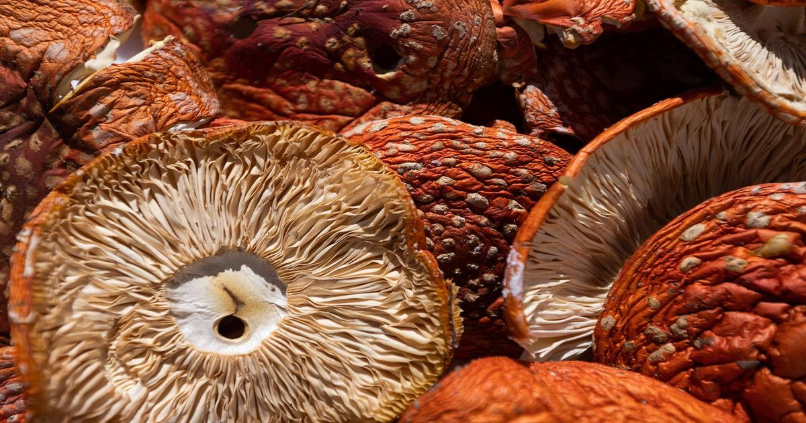

Табуретки и токсины
Когда я обнаружил, что гриб Amanita muscaria продается в упаковках конфет, я обнаружил юридические лазейки, опасные дозировки и многое другое - Эрик Лис Читать на Aeon

Когда я обнаружил, что гриб Amanita muscaria продается в упаковках конфет, я обнаружил юридические лазейки, опасные дозировки и многое другое - Эрик Лис Читать на Aeon